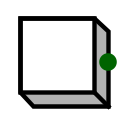

| Library: | Input/Output |
| Introduced: | 2.1.3 |
| Appearance: |  |
Outputs 0 normally; but when the user is pressing the the button using the Poke Tool, the output is 1.
A button has only one pin, a 1-bit output, which is 0 except when the user is pressing the button using the Poke Tool, when it is 1.
When the component is selected or being added,
the arrow keys alter its Facing
attribute.
When the mouse button is pressed, the component's output will be 1. Upon releasing the mouse button, the output reverts back to 0.
Allows the label associated with the component to be edited.